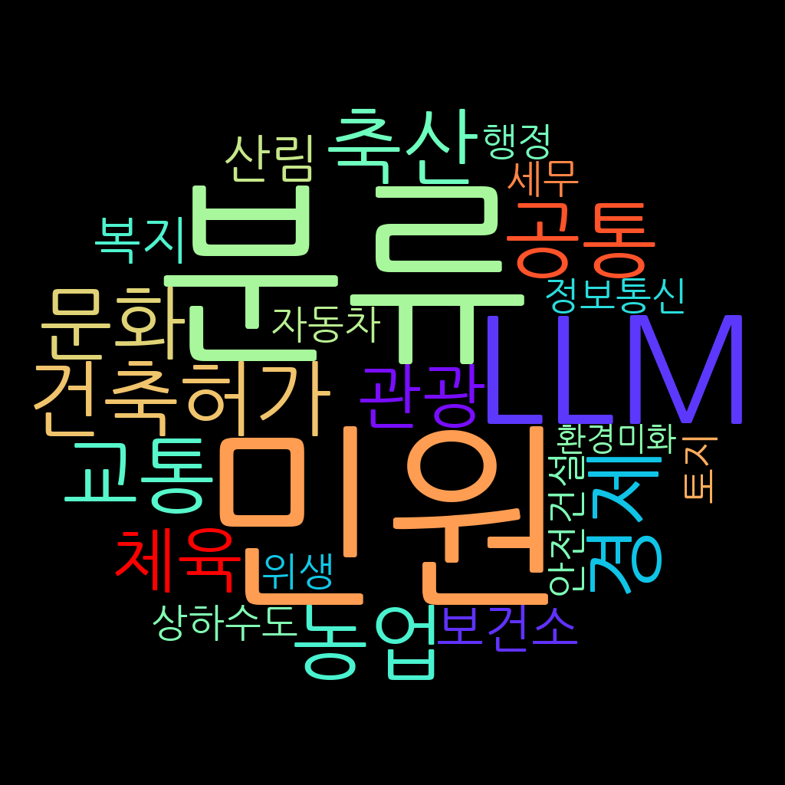

YIM YONGGYUN
AI로 세상의 복잡함을 이해하고, 더 나은 결정을 설계합니다.

Yim YongGyun
AI Engineer
- 📧 Email: john.yg.yim@gmail.com
- 🐱 GitHub: github.com/John-Yim
- 🧪 HuggingFace: huggingface.co/JohnYim0213
About Me
- 🏞️ 조용한 시골길을 혼자 걷고 자연 속에서 머무는 걸 좋아합니다.
- 🔧 프라모델을 조립하거나 요리처럼 손으로 무언가를 만들 때 가장 몰입합니다.
- 💡 궁금한 게 생기면 일단 해보는 편이라 늘 뭔가를 실험하고 경험합니다.
Education
- 학교: 상지대학교
- 전공: 정보통신소프트웨어공학과
- 학위 기간: 2018.03 ~ 2024.02
- 총 평점: 3.94 / 4.5 (이수 학점: 132학점)
- 전공 평점: 4.06 / 4.5 (전공 학점: 80학점)
Activities
- 학부 연구실 (U & I) — 2023.01 ~ 2024.02
-
국비지원 교육 — 자바 기반 AI 활용 SW 개발 및 응용 과정 (2024.12 ~ 2025.02)
※ 6개월 과정이었으나 수업 난이도와 교육 환경 적합성을 고려해 교육기관 권유로 아래 과정으로 변경 - 국비지원 교육 — 데이터 분석 기반 인공지능 시스템 개발자 양성 과정 (2025.02 ~ 진행 중)
Skills
| Category | 많이 해봤어요 | 해본 적 있어요 |
|---|---|---|
| Language |
C/C++
Python
|
Java
C#
|
| Frontend |
HTML
PHP
|
JavaScript
|
| Backend |
MySQL
Flask
|
JSP
|
| Framework / Library |
PyTorch
Keras
scikit-learn
OpenCV
|
TensorFlow
|
| Tools & IDE |
VSCode
PyCharm
Jupyter Notebook
Colab
|
Eclipse
|
| DevOps / Infra | Git / GitHub Linux (Ubuntu) |
AWS EC2
Azure
|
Projects

Kaggle Competition BirdCLEF+2025
5인 팀 참가(조장) | 개발기간: 2025.05 ~ 2025.06
자연 환경에서 수집된 60초 길이의 사운드스케이프 녹음으로부터 206종의 동물 소리(조류, 포유류, 양서류, 곤충 포함)를 탐지하고 분류

민원 텍스트 분류 및 정부 부처 정보 추천 시스템
개발 인원: 1명 | 개발 기간: 2025.02 ~ 2024.04
사용자가 입력한 민원 텍스트를 18개 카테고리로 분류한 뒤, 예측된 카테고리에 맞는 중앙정부부처 정보를 제공

전이학습 기반 뇌종양 분류
개발 인원: 1명(졸업작품) | 개발 기간: 2023.08 ~ 2023.11
MRI 뇌 영상 데이터를 기반으로 딥러닝 모델을 활용해 뇌종양의 존재 여부 및 종류 분류
Awards
-
졸업작품발표회 최우수상
– 졸업작품 “딥러닝 기반 전이학습을 활용한 뇌종양 분류” 발표 (2023.11) -
추계학술대회 우수 발표 논문상
– 졸업작품 내용을 기반으로 (사)한국융합신호처리학회 주최 추계학술대회 발표 (2023.12) ( 논문 보기 )
Certificates
-
정보처리기사
– 취득: 2024.09.10 | 발급기관: 한국산업인력공단 | 자격번호: 24202230311G -
빅데이터분석기사
– 취득: 2024.12.20 | 발급기관: 한국데이터산업진흥원 | 자격번호: BAE-009002809 -
SQLD
– 취득: 2024.12.13 | 발급기관: 한국데이터산업진흥원 | 자격번호: SQLD-055000602 -
DAsP
– 취득: 2024.10.25 | 발급기관: 한국데이터산업진흥원 | 자격번호: DAsP-057000883 -
네트워크관리사 2급
– 취득: 2024.10.08 | 발급기관: 한국정보통신자격협회 | 자격번호: NT2074462